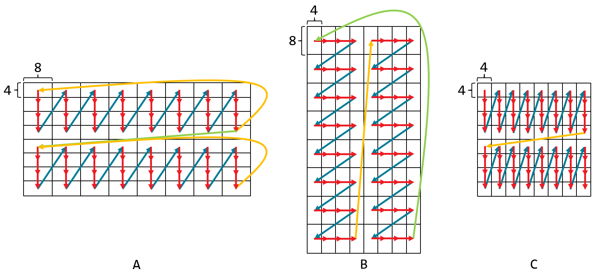
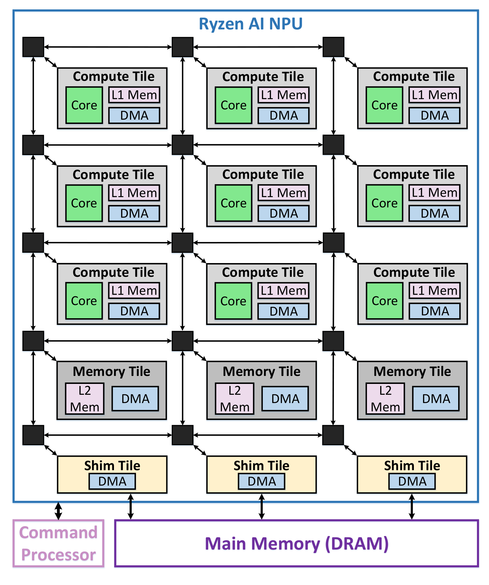

IRON + MLIR-AIE
Python 描述 Workers、ObjectFifos、DMA 與 placement；C++ AIE API 寫單核 compute。可以追蹤到每個 tile、buffer、core ELF。
想回答「硬體到底怎麼跑」：從這裡開始。[2]
把 XDNA 2 看成一座可程式化資料流工廠：資料如何搬、在哪裡算、用什麼精度，和選哪個 compiler 一樣重要。
以 Strix Halo 為起點，從 AIE2P 矩陣運算單元，一路走到可以閱讀、修改與編譯的 Python／C++。
邏輯 device model 示意，不是 die photo；可使用欄數仍依 SKU、driver 與 runtime partition 而定。[1]
這次選擇 IRON／MLIR-AIE + Peano 當核心研究底座，再加入 Triton-XDNA + MLIR-AIR 作為高階、自動產生 kernel 的前沿路線。它們是同一生態系的不同層，不是六個互斥 compiler。
Python 描述 Workers、ObjectFifos、DMA 與 placement；C++ AIE API 寫單核 compute。可以追蹤到每個 tile、buffer、core ELF。
想回答「硬體到底怎麼跑」：從這裡開始。[2]
從 tl.dot 等 Triton kernel 出發，經 Linalg、Transform dialect、AIR，編成 AIE 程式；不必先手寫 C++ matmul library。
特定 matmul 有接近手寫 baseline 的證據；不是任意 Triton 都能無修改跑。[5]
LLVM fork 中的 AIE backend，負責單核指令選擇、register allocation、software pipelining 與 VLIW 排程。
--target=aie2p-none-unknown-elf
不是 gfx1151 GPU target。[4]
IREE-AMDAIE 也已下載供比較：上游自稱 early-phase compiler/runtime plugin，適合研究 graph／IREE HAL 整合；文件仍提到部分最佳效能測試需要專有 Chess。這次不把它當首選教學路線。Ryzen AI Software 則偏向模型部署，不等於本指南的完全開源自訂 kernel compiler。[13]
Scalar control + SIMD/vector 計算 + VLIW 指令 bundle。從本地 SRAM 載入向量，送入 multiply/accumulate 路徑；與 DMA、鄰近 tile、stream switch 配合。
AI Engine 是 in-order、exposed-pipeline 處理器；compiler 必須知道運算延遲、register 使用時刻與 issue slots，安排 load、compute、store 的重疊。Peano 甚至要處理 negative operand latency 與特殊 register hierarchy。
這不同於讓大量 GPU wavefronts 由硬體輪替隱藏延遲；也不代表整個 NPU 永遠不會阻塞，stream／lock／DMA 等待仍然存在。[4]
Host DRAM → Shim DMA → MemTile → Compute L1 → vector registers → accumulator。結果可回到 memory tile，也可透過專用 cascade 路徑傳遞中間累加值。
acquire()／release() 描述資料生命週期；ObjectFifo lowering 產生 buffers、locks、DMA。它不是 Python queue 在 NPU 上執行。[7]
npu2 device model 與 aie2p core target。共享系統 DRAM，不代表可以把 GPU pointer 或 HIP binary 直接交给 NPU。新 runtime 的 zero-copy 是另外一層映射與同步機制。文件閱讀注意：AIE2P（arch 21）≠ AIE2PS（arch 22）。AM027 的 Versal AIE-ML v2 不是可直接當成 Ryzen XDNA2 指令集手冊的同一 target，尤其不可移植它的 FP16／FP8 型別支援結論。本文以 NPU2 device model 與 AIE2P headers 為準；AMD Hot Chips 的 XDNA 2 簡報另已下載。[15]
必須拆成三層：能表示／搬運 → 有 intrinsic 或 emulation → frontend 有可用 mapping 與驗證範例。下表針對 AIE2P 的矩陣乘法，不是列出 Clang 所有語言型別。[6][8]
| Input A × B | 矩陣計算路徑 | Accumulator / 寫回 | Compiler / 範例界線 |
|---|---|---|---|
| INT8 × INT8 signed / unsigned variants | 原生整數矩陣路徑 例如 8×8×8 | 通常 acc32；可轉 i8/i16/i32。縮位不是 accumulator 寬度。 | IRON i8 kernel；Triton-XDNA AIE2P i8 transform。unsigned 組合仍需查 specialization。 |
| INT8 × INT4 | API 有 4×16×16；本 Peano wrapper 先 unpack，再組合兩個 INT8 matrix primitives。 | acc32；packed 4-bit 儲存存在，但不證明運算也是原生 4-bit。 | 不是所有 W4A16 或 GGUF Q4 都直接可跑；API 模式表不足以推導 INT4 TOPS。 |
| INT16 × INT8 INT8 × INT16 | 有 mixed integer 模式；反向 operand 組合可能需額外重排。 | 依 intrinsic 與 AccumTag 選擇；不能只從輸出 i16 推算。 | 查 16×8、8×16 各自形狀，不要假設交換 A/B 沒成本。 |
| INT16 × INT16 | 原生整數路徑 IRON 常用 4×4×8 | 常用 acc64，轉出 i16 或 i32；須定義 shift／rounding／saturation。 | IRON 有 kernel；Triton README 提到 I16 結果，但當前 dashboard 未列獨立 I16 matmul 範例。 |
| INT32 參與乘法 | 本 Peano 的 32×16 的 4×2×8 有直接 primitive；較大 K、16×32、32×32 常需分解。 | 例如 32×acc64；不是所有 INT32 都只有 software emulation。 | 舊 API 表註腳較籠統，本指南以固定版本 header/builtin 為準；不等於原生通用 INT32×INT32 MMA。 |
| BF16 × BF16 | 有 BF16 硬體乘法路徑；mmul 可組合多個 intrinsic。IRON 選 4×8×8。 | accfloat（FP32 accumulation）；寫回 BF16 或 FP32。 | IRON 和 Triton 均有範例；Triton packing／lowering 可能選 BFP 路徑，需查 IR。 |
| BFP16 | EBS8 有直接 8×8×8 matrix primitive；EBS16 有儲存／轉換。 | 共享 exponent，不是 IEEE FP16。EBS8 / EBS16 是 exponent block size。 | 型別存在不保證每個 shape／EBS16 specialization 都能 instantiate。 |
| BFP8：本次未證實 | 未找到 AIE2P 獨立 BFP8 block-vector／MMUL 登錄。 | 不能把 BFP16 的 8-bit mantissa 改叫 BFP8。 | arch 22 的 bfloat8 / float8 不是 XDNA2 AIE2P 支援證據。 |
| FP32 × FP32 | 矩陣乘法由 BF16 運算 emulation，不是原生完整 FP32 MMA | FP32 輸出／accumulator ≠ FP32 input multiplication precision。 | Triton padded f32 範例明示 BF16 emulation；不能推論符合完整 IEEE FP32 matmul。 |
| FP16 / IEEE FP8 / FP64 | 本文查核的 AIE2P mmul 表未證實直接原生模式 | 需 conversion／software lowering 或其他 device。 | 「沒有查到 native MMA」不等於任何 load/store 或 scalar operation 都不支援。 |
BF16 每個元素各自有 exponent。BFP 把一群數值共用 exponent，以較窄的尾數表示整個 block；outlier 可能讓同組小數值失去有效位元。
AIE_API_EMULATE_BFLOAT16_MMUL_WITH_BFP16 是從 BF16 語意介面切到 BFP16 計算的選項，明確以 accuracy 換 throughput。[6]
AIE API 文件的 superscript a/b/c/e 分別涉及多 intrinsic、額外資料處理、32-bit 乘法合成與 BFP emulation。查 support table 時不能把註腳省略；headers 和本次固定版本的 kernel 才是實作依據。
mul_4x16_16x16 這個「intrinsic」wrapper 在本 Peano 中先 unpack，再執行兩次 INT8 運算。逐條 immutable 原始碼、行號、signedness、accumulator、rounding 與 emulation 展開見 獨立查核報告。這也說明為什麼不能直接抄 architecture cheatsheet 的 BF16 MAC/cycle 數字。
aie::mmul<M,K,N,TypeA,TypeB,AccumTag> 封裝矩陣乘加。mul(A,B) 初始化結果，mac(A,B) 累加新的乘積。每個 template shape 可能需要多條 intrinsic；不要用一次 API call 推算 cycle 數。[6]
accfloat → FP32
這裡顯示 IRON kernel 的幾種常用 geometry，不是 AIE API 支援形狀的完整全集；BFP 模式要連同 DMA packing 一起修改。[8]
Host row-major 的一個 64×64 block，不等於一連串 microtile 的記憶體順序。可用 MemTile 的多維 DMA，把 transfer 同時做成 tile packing／transpose，再讓 core 用連續 vector loads。
# A block (m,k) → 一串 (r,s) microtiles
# IRON dims_to_stream 示意；以目前 API element units 為準
[
(m // r, r * k),
(k // s, s),
(r, k),
(s, 1),
]MemTile BD 支援 4 維 addressing；core/shim BD 為 3 維。不能把 4D reshape 任意放到任何 DMA。重排可減少 core 指令，但不代表 bus、descriptor 與 bandwidth 成本為零。[3][7]
__restrict 幫助 alias 分析。cascade_mm 範例仍是 scalar-only，不能宣稱已有高效 vector cascade GEMM。教學用：A 有 32 個 BF16，B 有 64 個 BF16，C 有 32 個 FP32；各小矩陣在自身 block 內 row-major，指標至少 64-byte 對齊。只算一個 microtile，不含 host、DMA、placement 或大型矩陣外圈。
以下非 BFP 解釋假設 AIE_API_EMULATE_BFLOAT16_MMUL_WITH_BFP16 未定義。若啟用，數值路徑會改變；請同時閱讀 audit 中的 rounding mode save／set／restore 範例。
// AIE2P C++ fragment. Source-level checked, not compiled here.
#include <aie_api/aie.hpp>
extern "C" void bf16_tile(const bfloat16* __restrict a,
const bfloat16* __restrict b,
float* __restrict c) {
using MM = aie::mmul<4, 8, 8, bfloat16, bfloat16, accfloat>;
auto av = aie::load_v<MM::size_A>(a);
auto bv = aie::load_v<MM::size_B>(b);
MM sum;
sum.mul(av, bv); // C := A * B
// More K blocks: sum.mac(next_a, next_b);
aie::store_v(c, sum.to_vector<float>());
}整數寫回則還涉及 to_vector<T>(shift)、rounding 與 saturation 設定。accauto 的決定依 operand type／target，不能把所有整數都假設成 acc32。[6]
沿用上面的 dtype。假設 A/B 各雙 buffer、C 一個 32-bit buffer、1 KiB stack。BFP 路徑仍儲存 BF16 輸入。這只是容量初篩，不是 compiler legality check 或效能預測。
L1 bytes = 2 × (m·k + k·n) × inputBytes + m·n × 4 + 1024
通過仍可能因 bank conflict、alignment、globals、額外 buffers、compiler spills 或 kernel expansion 限制而失敗。
編譯器有 array configuration 與 per-core compute 兩條相互配合的支線，不是只有把 Python 翻成一個 ELF。IRON JIT 的各步驟與 cache 產物見 compilation_stages.md。[9]
Triton (@triton.jit / tl.dot)
→ triton-shared : structured Linalg
→ MLIR Transform : tiling / packing / bufferization / vectorization
→ MLIR-AIR : air.herd / channels / async dependencies
→ MLIR-AIE + per-core code generation
→ runtime artifact (取決於 target / XRT 或 HSA)
→ NPU2 / AIE2Pair.herd 表示並行 worker 網格，air.channel.put/get 表示搬運端點，token 表示依賴。Compiler 可以用這些資訊安排資料與 compute 的重疊，不必由 host 每一小步同步。[10]
tt.shared.mlir：Triton shared/Linalg 表示。air_project/：AIR lowering 中間資料。aie.mlir、input_with_addresses.mlir：tile 配置與位址。main_core_<col>_<row>.ll/.o/.elf：per-core code。final.xclbin、insts.bin、main.pdi：IRON 常見產物。以下命令根據下載的 source snapshot 撰寫，尚未在這台機器安裝或執行。不會為了做網站而更換你的 kernel、driver、ROCm 或重啟服務。
IRON 和 Triton-XDNA 使用不同的 matching dependency pins，建議兩個 venv。不要把任意最新 mlir-aie、AIR、Peano wheels 混在一起；source snapshot HEAD 也不保證剛好有對應 wheel。
# 先唯讀確認 host / driver；沒有工具就先讀 upstream setup guide
uname -r
xrt-smi examine
# 本次下載的位置
cd /home/chihmin/xdna2-lab/sources/mlir-aie
git rev-parse HEAD
# 0ed8e7e477fd9094acee8dada7ab81604a7fb07a
# 確認你要安裝的版本與 wheel 對應後，再執行：
source utils/env_install.sh
source utils/env_setup.sh當前 Ubuntu 指南的 packaged flow 指定 Linux 6.17+，PPA 的 pyxrt 綁 Python 3.12；其他 Python wheels 的可用範圍較廣。這不是「所有 Linux 必須 6.17」：non-Ubuntu／in-tree driver 有另一條安裝路線。這些是上游要求，不是本機已驗證的環境。[2]
這是自 README 改寫的可讀範例，加上明確 NPU2 device 與結果檢查。Python 函式建立 MLIR design；NPU 上不是在跑 CPython。
import numpy as np
import aie.iron as iron
from aie.iron import In, Out, ObjectFifo, Program, Runtime, Worker
from aie.iron.controlflow import range_
from aie.iron.device import NPU2
data_ty = np.ndarray[(1024,), np.dtype[np.int32]]
@iron.jit
def add_one(a_in: In, b_out: Out):
incoming = ObjectFifo(data_ty, name="in")
outgoing = ObjectFifo(data_ty, name="out")
def core_fn(src, dst):
a = src.acquire(1)
b = dst.acquire(1)
for i in range_(1024):
b[i] = a[i] + 1
src.release(1)
dst.release(1)
worker = Worker(core_fn, [incoming.cons(), outgoing.prod()])
def sequence(a, b, src, dst):
src.fill(a)
dst.drain(b, wait=True)
runtime = Runtime(sequence, [data_ty, data_ty,
incoming.prod(), outgoing.cons()])
return Program(NPU2(), runtime, workers=[worker]).resolve_program()
a = iron.arange(1024, dtype=np.int32, device="npu")
b = iron.zeros(1024, dtype=np.int32, device="npu")
add_one(a, b) # first call compiles; subsequent calls may hit cache
np.testing.assert_array_equal(np.asarray(b), np.arange(1024) + 1)這段用來學 control flow 與 FIFO，不宣稱自動成為最佳向量化 kernel。若先執行原版範例，可從 programming_examples/basic/vector_scalar_add/vector_scalar_add.py 開始。[2]
先用 upstream 的完整 host→DMA→microkernel→verify 流程；以 8 欄 NPU2、BF16 輸入、FP32 輸出為例。刻意明列尺寸，避免 README 與 CLI 預設值不同。
cd /home/chihmin/xdna2-lab/sources/mlir-aie
source utils/env_setup.sh
cd programming_examples/basic/matrix_multiplication/whole_array
python3 whole_array.py --dev npu2 --n-aie-cols 8 \
-M 512 -K 512 -N 512 -m 64 -k 64 -n 32 \
--dtype_in bf16 --dtype_out f32 --use-chess 0這組參數符合腳本的 array 級整除要求：M % (m×4) = 0、K % k = 0、N % (n×columns) = 0，且 M/m/4 為 transfer-block 要求的偶數。還需通過 compiler 的記憶體、route、kernel expansion 檢查。若 runtime 可用 partition 少於 8 欄，應改成可分配的欄數。[7]
# 換成 BFP16 emulation 時，不只改 dtype：
# 在上面的 whole_array.py 命令後加：
--emulate-bf16-mmul-with-bfp16 1# Python：在已選 device 的 design 中查實際 geometry
import numpy as np
from aie.iron import kernels
from ml_dtypes import bfloat16
mm = kernels.mm(dim_m=64, dim_k=64, dim_n=32,
input_dtype=bfloat16, output_dtype=np.float32)
r, s, t = mm.mac_dims
zero = mm.zero上段最後的 Python 片段應在已選定 device 的 design 環境中使用；完整做法以 whole_array.py 為準，不要把它獨立當成完整 GEMM 程式。
cd /home/chihmin/xdna2-lab/sources/Triton-XDNA
python3 -m venv sandbox
source sandbox/bin/activate
python3 -m pip install --upgrade pip
# 上游 binary 安裝路徑。latest-wheels 是滾動版本，不是可重現 lock。
# 若要研究本次 source snapshot，使用此 checkout 的 source-build
# 說明及 utils/mlir-air-hash.txt / peano-requirements.txt 對齊依賴。
pip install triton-xdna \
--find-links https://github.com/amd/Triton-XDNA/releases/expanded_assets/latest-wheels \
--find-links https://github.com/Xilinx/mlir-aie/releases/expanded_assets/latest-wheels-no-rtti-2 \
--find-links https://github.com/Xilinx/llvm-aie/releases/expanded_assets/nightly \
--find-links https://github.com/Xilinx/mlir-air/releases/expanded_assets/latest-air-wheels-no-rtti
# 已正確安裝 XRT 與 pyxrt 後，source 你的 XRT setup.sh。
# 例：source /opt/xilinx/xrt/setup.sh
pip install torch --index-url https://download.pytorch.org/whl/cpu
cd examples/matmul_bf16_m64_n64_k64
AIR_TRANSFORM_TILING_SCRIPT=transform_aie2p.mlir \
python matmul_bf16_m64_n64_k64.py最後命令執行上游多組尺寸驗證，不只是單一 64×64 matmul，第一次編譯可能很重。例子名稱中的 m64/n64/k64 描述內部 tiling，不代表整體 M/N/K。先讀 script 再決定縮小測試範圍。[5]
# 摘錄自 upstream bare_matmul；省略 signature / launch
# 這段示例只處理相容的整除尺寸，沒有 boundary masks。
pid_m = tl.program_id(0)
pid_n = tl.program_id(1)
# ...build offsets / load A and B...
a_block = tl.load(a_ptrs)
b_block = tl.load(b_ptrs)
c_block = tl.dot(a_block, b_block)
tl.store(c_ptrs, c_block)transform_aie2p.mlir 才是 NPU2 mapping；transform_aie2.mlir 是 NPU1。Triton program_id 的 logical grid 不等於一對一的實體 NPU tile。
當前 BF16 AIE2P transform 註明 pack=[8,8,8]、f32 accumulator；不要硬套 IRON 非 BFP 的 4×8×8 geometry。Compiler lowering 決定實際指令／精度路徑。[16]
AMD 的 XDNA 2 簡報列出 50 INT8 TOPS 與 50 Block FP16 TFLOPS 級峰值；後者不是 50 TFLOPS 原生 BF16 或 FP32。每個 SKU、時脈、功耗與可用 tiles 都會影響可達值。[15]
用 2MNK 計算數學 operations，再除以實際 DDR traffic。理想情況 bytes 約為 MK·a + KN·b + MN·c；重載、padding、packing 與 cache/mapping 會改變真實流量。
多用一倍 tile 可能增加 broadcast、BD 與同步壓力。單 token decode / GEMV 通常比大 batch prefill GEMM 更容易被權重 bandwidth 或 launch overhead 限制。
分開記錄 JIT compile、buffer allocation/mapping、copy、device execution、同步與驗證。要做 GPU/NPU 比較時，至少對齊精度、shape、batch、資料駐留與功耗。
先讓 GPU 繼續處理成熟 HIP/ROCm workload。選一個固定形狀、足夠高 reuse 的 INT8／BF16 operator，在 NPU 上建立 correctness + warm latency baseline。只有在包含 dispatch、資料交接與同步後仍划算，才考慮拆分整個模型。不要把 NPU 的 50 TOPS 直接加到 GPU FLOPS 上，宣稱 LLM 會快某個比例。
研究根目錄：/home/chihmin/xdna2-lab/。網站標註的日期是取得 snapshot 的日期，不代表所有資料都在當日發表。下載包包含 manifest、來源 URL、commit SHA 與檔案 SHA-256。
| Repository | 固定 commit | 下載範圍 |
|---|---|---|
| Triton-XDNA | 5c33df1263f29de30f71616780c2e8a88e623782 | Shallow source snapshot；submodules 見 manifest |
| aie_api | bec000fd312b407c61f25ef86fd582042e42d28a | Shallow source snapshot；submodules 見 manifest |
| iree-amd-aie | fddfec1be6ceefbdb890079d957947dfa1fe0848 | Shallow source snapshot；submodules 見 manifest |
| llvm-aie | 386ca5c6634a84bb224b7248e79df8edabf0722f | LLVM sparse checkout / AIE backend + headers |
| mlir-aie | 0ed8e7e477fd9094acee8dada7ab81604a7fb07a | Shallow source snapshot；submodules 見 manifest |
| mlir-air | ff95a9b35b692b4cfbdf1d52bf69e6ffe01facde | Shallow source snapshot；submodules 見 manifest |
大型 source archive 與原始 PDF 文件包另附於對話，不將整個 upstream repository 放上網站。
完成：開源碼下載、原始文件下載、原始碼交叉查核、網站與互動模型測試。
未完成：compiler build、wheels 安裝、driver 變更、NPU correctness／performance 實測。LLVM 為明確範圍的 sparse checkout；不宣稱已可離線完整重建 toolchain。


圖片與引用程式碼權利屬原作者；上游程式碼授權隨 source archive 保留。本文的解釋、估算器與重繪 tile 示意為本次製作。AM027 AMD portal 本次只取得載入頁，因此沒有把它冒充成已下載的完整手冊。